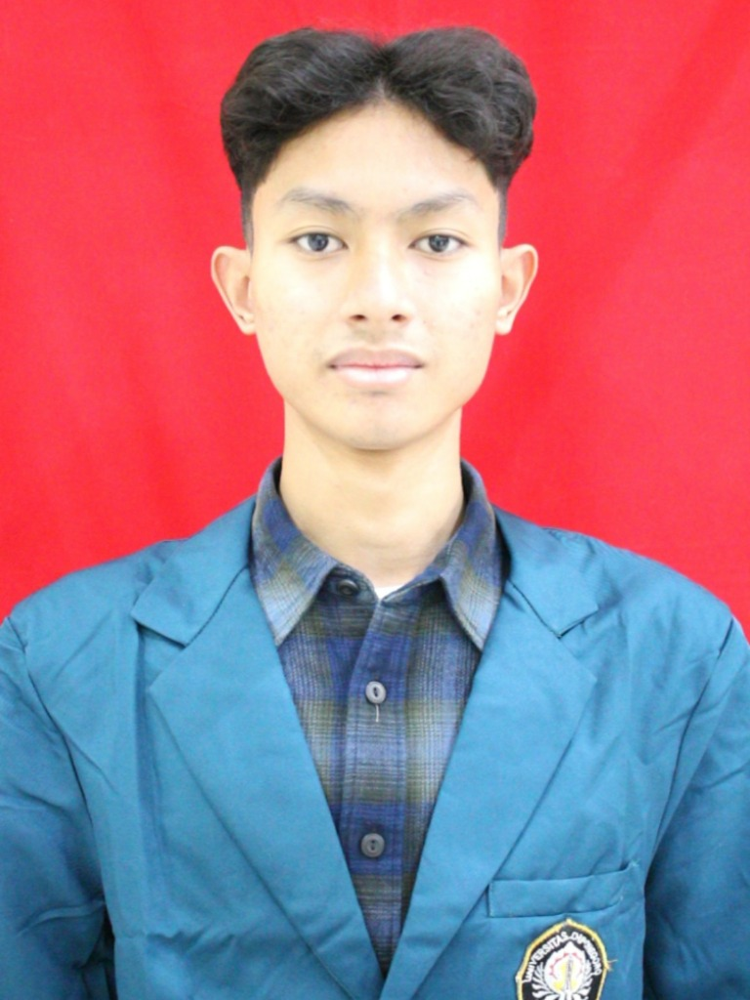

Deteksi Anomali
Spasial Harga Tanah
Proposal riset dan surat motivasi oleh Alga Sherwin Wicaksana untuk seleksi Tim Riset Dosen Mahasiswa (RDM) 2026. Berfokus pada analisis klaster spasial harga tanah (Overvalued & Undervalued) di Kota Semarang.
Planologi / PWK
Analisis Klaster Spasial
RStudio & GIS
Pemrosesan 100K+ Data
Rencana Riset & Motivasi
Pilihlah setiap tab di bawah untuk melihat detail rancangan riset, kesiapan teknis, dan tujuan kontribusi saya.
Menjembatani Celah Antara Kebijakan Wilayah dan Realitas Pasar
Laju pertumbuhan Kota Semarang yang begitu masif membawa konsekuensi logis pada dinamisnya transaksi properti di lapangan. Peta rencana tata ruang (RTRW) sering kali harus berkejaran dengan realitas pergerakan pasar yang berjalan cepat, sehingga melahirkan jarak (gap) yang lebar antara kebijakan wilayah dan kenyataan spasial.
Ketimpangan tersebut memicu lonjakan harga tanah yang tidak rasional di beberapa kawasan, menciptakan anomali pasar ekonomi yang tidak efisien.
Fenomena sengkarut harga dan ruang inilah yang mendasari keputusan saya untuk memilih Topik 2: Deteksi Anomali Spasial Harga Tanah (Overvalued dan Undervalued) Berbasis Analisis Klaster Spasial.
Ketimpangan tata ruang dan pergerakan pasar memicu lonjakan harga tanah tidak rasional, menciptakan anomali pasar ekonomi yang tidak efisien.
Membedah Anomali Pasar Melalui Analisis Klaster Spasial
Dinamika nilai lahan memegang kunci utama dalam mengontrol arah perkembangan struktur kota. Melalui riset ini, saya ingin membedah "kesalahan tebakan pasar" dengan mengekstrak nilai sisa (Standardized Residuals) dari model harga hedonik.
Rancangan pemrosesan data yang akan dilakukan:
- Ekstraksi Residu Hedonik: Memperoleh angka residu untuk memetakan deviasi harga pasar sesungguhnya dari nilai estimasi teoretis.
- Anselin Local Moran’s I (LISA): Mengidentifikasi klaster secara spasial untuk memetakan zona kemahalan (Hotspot/Overvalued) dan zona murah (Coldspot/Undervalued) secara sistematis.
- Analisis Silang (Cross-Validation): Memperkuat validasi temuan dengan data penguasaan lahan kosong (land tenure) serta proyeksi arah perkembangan kota.
Hasil dari riset ini diharapkan mampu menghasilkan instrumen evaluasi yang kuat bagi pemerintah daerah dalam meredam praktik spekulasi tanah di Semarang.
Modal Teknis Analisis Spasial & Komputasi Data
Saya memiliki latar belakang teknis yang relevan untuk mengeksekusi topik riset ini dengan baik:
QGIS & ArcMap
Terbiasa mengoperasikan software GIS untuk analisis spasial makro dan statistik spasial lokal.
RStudio Experience
Telah berpengalaman menggunakan algoritma Local Moran's I dalam memetakan kerawanan banjir lahan pertanian di Pekalongan.
Mengolah lebih dari 100.000 data transaksi merupakan tantangan komputasi berskala masif. Saya sangat siap meningkatkan kecakapan RStudio ke tingkat advanced sekaligus mempelajari ekosistem Python, VS Code, dan Google Earth Engine demi menjamin kelancaran riset ini.
Tanggung Jawab, Disiplin, & Dedikasi Riset
Bergabung dalam Tim Riset Dosen Mahasiswa (RDM) berarti memegang tanggung jawab dan disiplin tinggi yang melampaui sekadar pemenuhan syarat kelulusan tugas akhir.
Komitmen yang saya persiapkan meliputi:
Mempelajari Literatur Dasar
Secara mandiri mulai mendalami kajian teoretis terkait hedonic pricing dan autokorelasi spasial untuk memperkuat fondasi berpikir riset.
Komitmen Garis Waktu (Timeline)
Berkomitmen penuh mengikuti seluruh garis waktu riset secara disiplin dengan target menghasilkan analisis kuantitatif valid sebagai instrumen evaluasi kebijakan penataan ruang.
Pijakan Menuju Profesional Spatial Data Science
Keterlibatan dalam RDM ini akan menjadi pijakan kokoh untuk mematangkan arah karier saya pasca-kelulusan.
Dengan bekal riset komputasi data spasial besar ini, target karier profesional saya adalah:
- Property Data Analyst / Valuation Specialist di industri PropTech nasional.
- Konsultan Perencanaan Wilayah yang berbasis data presisi (Spatial Data Science).
Langkah ini sejalan dengan komitmen jangka panjang saya untuk terus mendalami analisis spasial demi penataan ruang Indonesia yang lebih baik.
Hormat saya,
Profil & Keahlian Teknis

Alga Sherwin Wicaksana
Planologi Student & Spatial Data Analyst
Mahasiswa Perencanaan Wilayah dan Kota (Planologi) yang berfokus pada analisis data spasial (Spatial Data Science), GIS, dan pemodelan wilayah untuk mewujudkan perencanaan serta penataan ruang yang berbasis data presisi.
Kompetensi Teknis Riset
Berikut adalah persentase kemahiran dan penguasaan perkakas analisis spasial yang mendukung riset ini:
Hubungi Alga
Punya pertanyaan, tanggapan mengenai riset ini, atau ingin berdiskusi lebih lanjut? Kirimkan pesan di bawah ini.